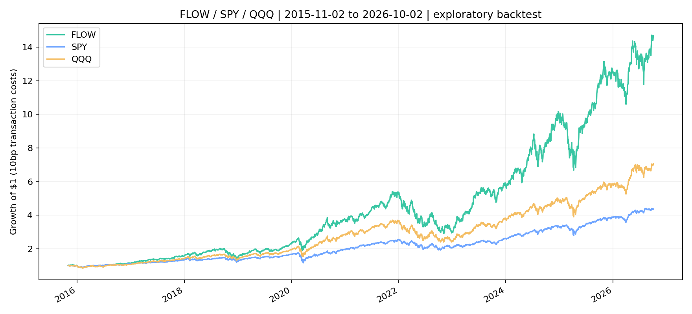

FLOW · HISTORICAL BACKTEST
환희
거래대금 상위 개별 주식 10개 · FLOW의 과거 백테스트
환희 / S&P 500 / QQQ

환희 연복리 27.92%SPY 13.78%QQQ 18.62%환희 최대 낙폭 −46.31%
2015-11-02 ~ 2024-12-31 · 시작 자본 1 · 거래금액당 10bp 비용 · 세금 제외. 탐색 후 선택한 전략이며 과거 데이터 누락에 따른 편향이 남아 있습니다. 실제 Paper 성과가 아닙니다. ETF는 비교 지표로만 사용합니다.
전략 규칙
당시 S&P 500 구성 종목에서 63거래일의 일별 종가 × 거래량 중앙값을 계산합니다. 최초 상위 10개를 편입하고, 기존 종목은 상위 20위 안에 남으면 유지합니다. 선택한 종목의 점수에 비례해 투자합니다.
분기말 신호 → 다음 거래일 종가 체결 · 레버리지 없음 · 개별 주식만 편입. 공포의 실제 운용은 접속 시 최신 신호로 주문하므로 실행 시점이 다릅니다.
연도별 수익률
| 연도 | 환희 | SPY | QQQ |
|---|
월말 백테스트 기록
전월 말 대비 NAV 변화. 최초 월은 시작 자본 1 기준입니다.
| 월 | 환희 | SPY | QQQ |
|---|